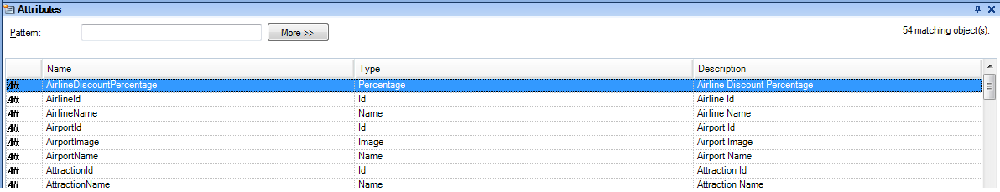
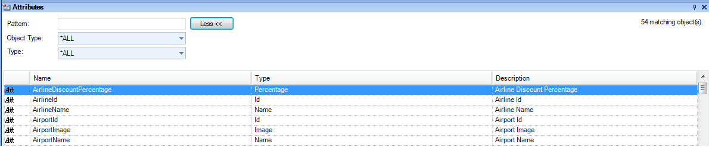
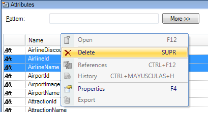

The Work With Attributes tool window, as its names describe it, lets you search for attributes that match conditions, and work with them:  When the More button is pushed, a group of combos appears at top of the window:  This allows you to select more specific filters to find the pattern attributes you wish to locate. The attributes shown as a result of your search can be selected (with both single and multiple selections) and dragged to an open object. Also, if you press the mouse right button for a certain attribute or a multiple selection, a contextual menu will be opened offering several possible actions:  For opening the Work With Attributes Window, select View > Work With Attributes in the GeneXus menu.
|
| Backlinks | |
| Insert Attribute option | Insert Attribute/Variable Dialog |